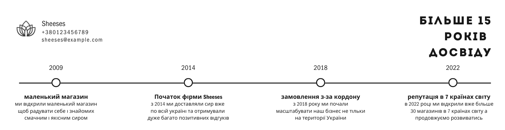
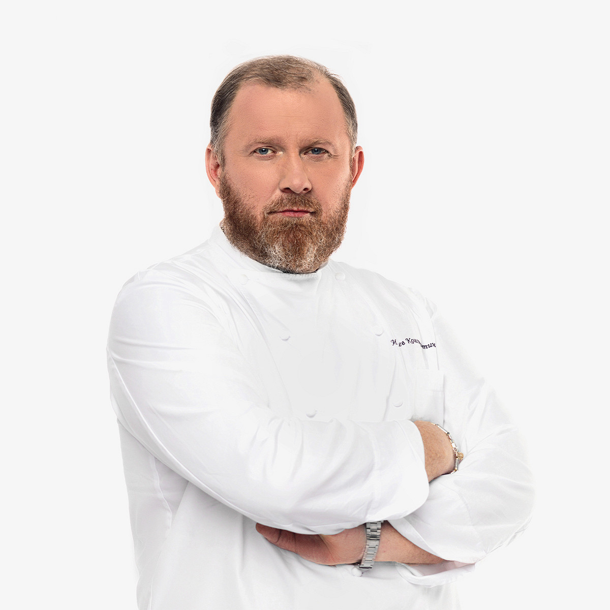

Емменталь — це класичний швейцарський сир з приємним ароматом і ніжним смаком.

Мармуровий сир — це поєднання ніжного вершкового смаку з елегантним зовнішнім виглядом.

Maasdam — це голландський сир з великими дірками та солодкуватим смаком.

Ми - компанія, яка професійно виготовляє сири з 2009 року. Наша історія почалася з невеликої сімейної ферми, де ми вперше спробували створити власний сир. Згодом наш ентузіазм перетворився на справжню страсть, і ми вирішили поділитися нашими унікальними рецептами зі світом.
Наші сири виготовляються з натуральних інгредієнтів, без штучних добавок. Ми пишаємося тим, що зберігаємо традиції виробництва сиру, водночас впроваджуючи сучасні технології для забезпечення високої якості продукції.
Сьогодні наша компанія є одним із лідерів на ринку сирів, і ми продовжуємо розвиватися, щоб радувати наших клієнтів новими смаками та видами сиру.